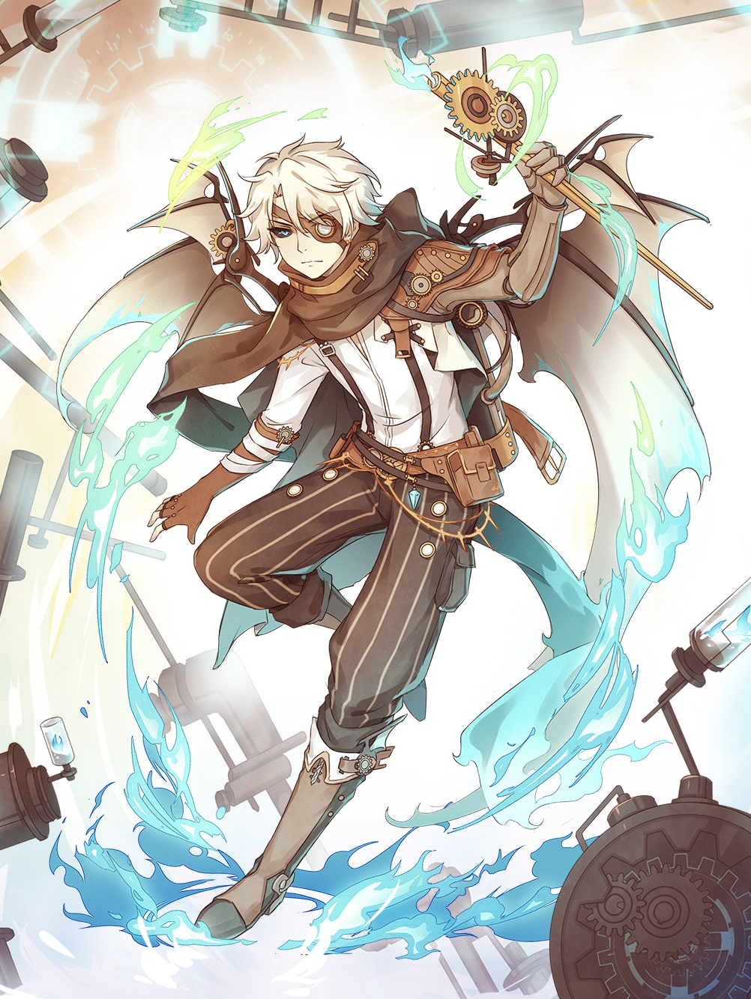

B-52

C.V. Edward Bosco
Pouvoirs et abilités
Type : Magic : Les Food souls de type magiques attaque à distance avec leurs armes et restent
plus en retrait de la ligne de front. Ils ont aussi souvent des pouvoirs spéciaux.
- Combat
- Purgatory Green Flame : B-52 relâche des flammes avec sa canne, octroyant des dégâts égale à 60%
de ses statistiques à tout les ennemis.
- Super Fixed Point Attack : En combinant ses pouvoirs avec Brownie, cette attaque fais 75% de
la statistique d'attaque en dégât et fige les ennemis pour 3 secondes.
- Fixed Point Attack : Son attaque fais 60% de dégât à tout les ennemis et fige les ennemis pour 5 secondes.
Statistques Prioritaires
- Attaque
- HP
- Attaque critique
- Critique